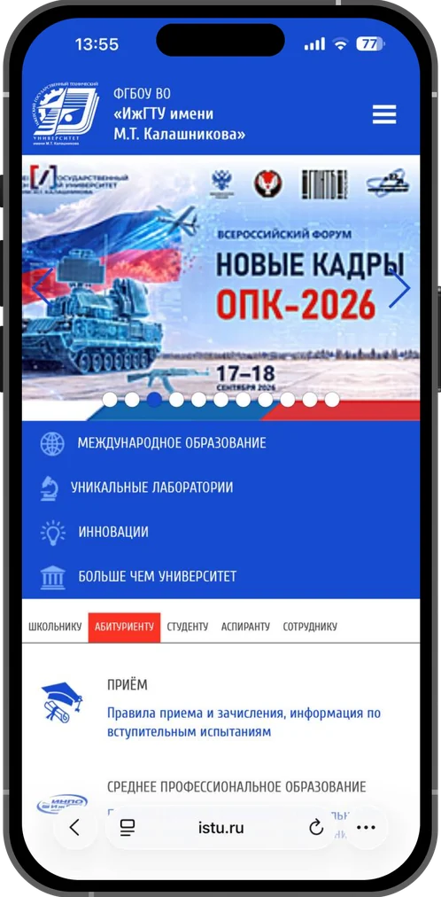
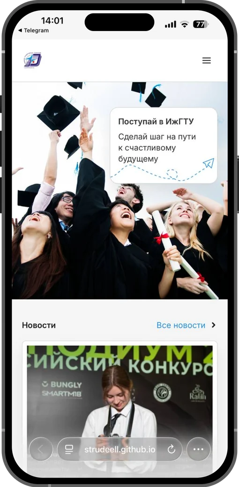

Сайт ИжГТУ
Как помочь абитуриенту найти подходящее направление и сравнить условия поступления.
Поиск направления
Я изучила потребности абитуриентов с помощью опроса и провела юзабилити-тест исходного сайта. Информация о программах была разнесена по разделам. Для редизайна я собрала её в каталог с фильтрами и разработала UI-кит.


Что изменилось
В повторном тесте участники находили направление в 9 раз быстрее. Оценка удобства по шкале SUS выросла с 66 до 96 баллов.